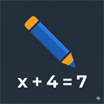
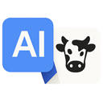

Daniel Burkhalter
Welcome! This is a compilation of my hobby projects. Feel free to poke around.
Apps
-

Math Scribe
An AI scribe that writes exactly what the student says. Built for 8th grade math.
-
Bank Check
See how your bank compares with peers and past failures. The app is large and slow to load, so please be patient.
-
US Coin Value & Wages
What US coins are worth in metal, and what 1964 wages would be worth today in silver, gold and inflation.
-

Dairy Translate
Proof of concept for translating English to Dairy Comp 305 code.
About
I'm a runner, data scientist, and self-taught developer. I grew up in rural western South Dakota, studied math, statistics, and data science at South Dakota State University (SDSU), and ran track and cross country there for six years.
I started my career building credit risk models and have since decided to explore the bioinformatics startup life for a while. These apps all point to my passions: running, banking, data, and helping kids.